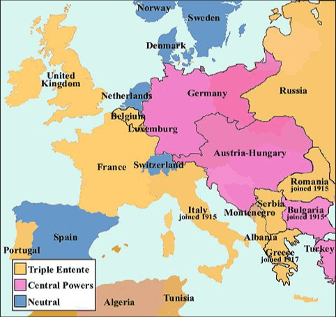
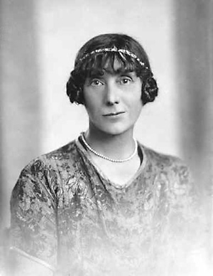
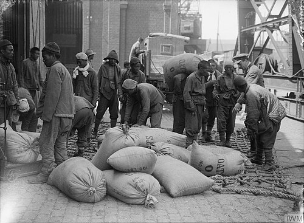
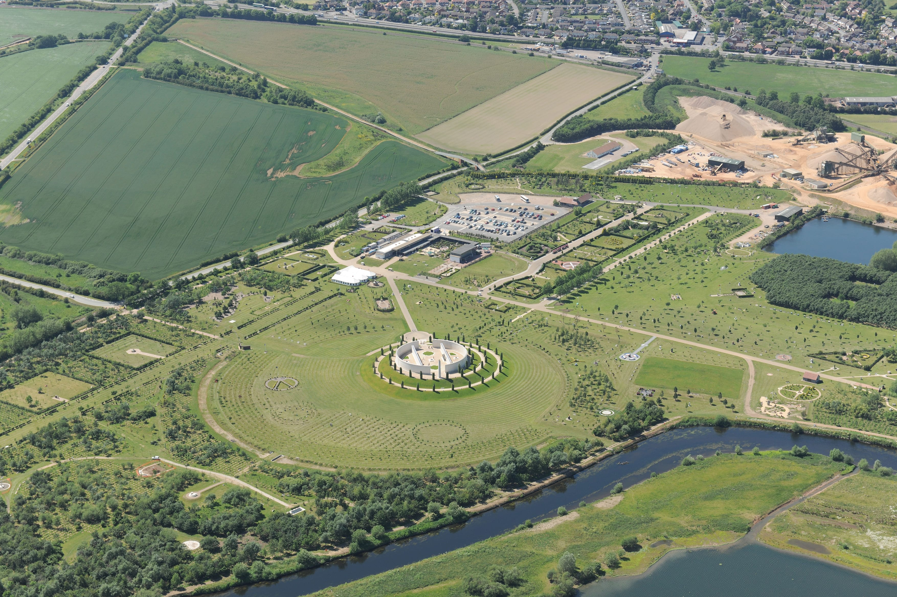
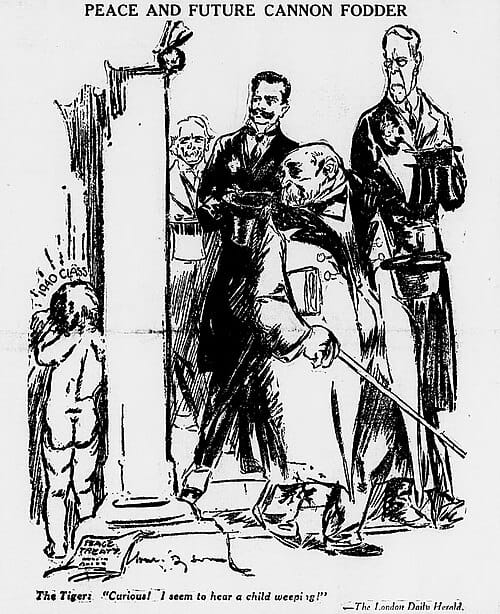
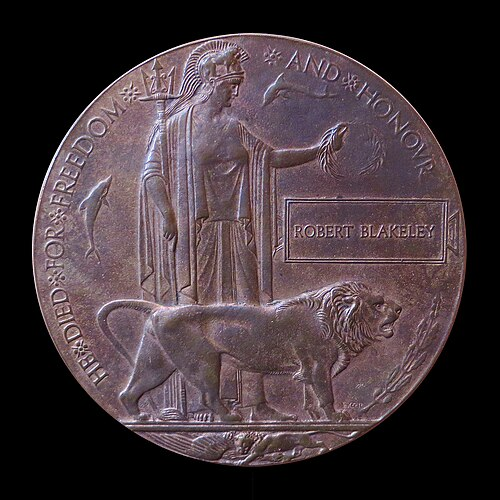

Complete Unit
KS3: The Great War (1914-1919)
Course Textbook
Enquiry: How did a single spark in Sarajevo ignite a global conflict that transformed the modern world?
Contents
|
Lesson 1: Why were young men so desperate to join the slaughter of 1914?
|
Page 2
|
|
Lesson 2: Did British generals make the horror of trench warfare worse?
|
Page 7
|
|
Lesson 3: How much of a 'World' War was it, and why were the Empire's troops forgotten?
|
Page 12
|
|
Lesson 4: How did a war fought miles away completely control daily life in Britain?
|
Page 16
|
|
Lesson 5: Did the Treaty of Versailles solve the problems of 1914, or create the nightmares of 1939?
|
Page 20
|
|
Lesson 6: How did the "Lost Generation" impact the village of Stubbington?
|
Page 24
|
|
Lesson 7: Assessment: The Great War
|
Page 28
|
L1: Why were young men so desperate to join the slaughter of 1914?[[SRC_MARKER:L0_Start]]
Learning Objectives
Understand the short-term and long-term causes of WWI.
Empathize with the young men volunteering in 1914.
Vocabulary Check
Write a short paragraph using at least FOUR of the vocabulary words below correctly.
Conscription | Pals Battalions | Propaganda | Historiography | Pragmatism

Source A: A map of the European Alliance System in 1914, dividing the continent into two heavily armed camps: the Triple Entente (Britain, France, Russia) and the Triple Alliance (Germany, Austria-Hungary, Italy). These mutual defense treaties acted as tripwires, ensuring any local conflict would drag all of Europe into war.
In the summer of 1914, Europe resembled a giant tinderbox waiting for a spark.
The Arms Race and Imperial Rivalry
To understand why Europe was so tense by 1914, we must look at the intense military and imperial competition between the Great Powers. A massive naval arms race was triggered in 1906 when Britain launched the
HMS Dreadnought. This revolutionary battleship was heavily armoured with steel 28 cm thick, carried a crew of 800 sailors, and possessed huge guns that could blow up enemy ships from 32 km away. This made all older ships instantly obsolete. A frantic race began: between 1906 and 1914, Britain built 29 Dreadnoughts while Germany built 17.
Tensions were further pushed to breaking point by imperial clashes in North Africa. During the Second Moroccan Crisis in 1911, Germany sent the gunboat
SMS Panther to the port of Agadir to aggressively challenge French control of the region, deeply alarming the British navy.
The July Days: The Countdown to War
The assassination of Archduke Franz Ferdinand on 28 June 1914 triggered a rapid chain reaction known as the 'July Days'. On 23 July, Austria-Hungary sent a strict list of demands to Serbia, including a demand to let Austrian officials run the assassination inquiry. When Serbia refused this demand to protect its independence, Austria-Hungary declared war on 28 July. The alliance system then activated like clockwork: Germany warned Russia not to intervene, and when Russia mobilised its army, Germany declared war on Russia on 1 August. On 3 August, Germany declared war on France, and on 4 August, Britain declared war on Germany after German troops invaded neutral Belgium.
When Great Britain declared war on Germany on August 4, 1914, the British military faced an immediate crisis. Unlike its European rivals, Britain did not have conscription. Its small professional army was vastly outnumbered. To build a massive fighting force from scratch, Secretary of State for War Lord Horatio Kitchener launched the most famous recruitment campaign in British history. By the end of September 1914, over 750,000 British men had volunteered.
[[SRC_MARKER:L0_Task_0_0]]Q1. What was the 'spark' that triggered the outbreak of the First World War in 1914?
[[SRC_MARKER:L0_Task_0_1]]Q2. Why did Great Britain desperately need volunteers to fight when war was declared?

Source B: A photograph of Gavrilo Princip, the 19-year-old Serbian nationalist and member of the Black Hand secret society. On June 28, 1914, his assassination of Archduke Franz Ferdinand in Sarajevo provided the 'spark' that ignited the First World War.
To encourage recruitment, the government promised that friends, sports teammates, and work colleagues could enlist and fight side-by-side in "Pals Battalions."
Local History: The Pompey Pals
For men living in Stubbington, Fareham, and Portsmouth, the call to arms was answered locally with overwhelming enthusiasm. In August 1914, the Portsmouth Citizens Patriotic Recruiting Committee formed the 14th and 15th Battalions of the Hampshire Regiment, famously known as the "Pompey Pals". Men who had grown up on the same streets, worked in the same dockyards, and supported the same football teams now trained together, sharing tents and rations before crossing the Channel to France.
Tragically, the fatal flaw of the Pals Battalions was that industrialized slaughter could wipe out the male population of entire streets in a single afternoon. At the Battle of the Somme on September 3, 1916, 587 men from the 1st Pompey Pals went "over the top" near the River Ancre. Facing heavily fortified German machine guns, 457 of them became casualties (killed, wounded, or missing) in a single day. The devastating news arrived in Portsmouth via telegraph, shattering local families and leaving a deep, enduring scar on the community.
[[SRC_MARKER:L0_Task_1_0]]Q3. Who were the 'Pompey Pals'?
[[SRC_MARKER:L0_Task_1_1]]Q4. What happened to the 1st Pompey Pals on September 3, 1916?

Source C: The famous 'Women of Britain Say GO!' propaganda poster, published in 1915. It emotionally manipulated men into volunteering by implying that their mothers, sisters, and wives expected them to fight, leveraging peer pressure and traditional masculinity.
The British government needed millions of men, and they used every psychological trick available to get them.
'Women of Britain Say GO!' Poster (1915)This famous propaganda poster featured women and children looking out of a window as soldiers marched away. It was designed to weaponize guilt and masculinity, implying that real men protected women and children, and that women wanted their men to fight.
The White Feather CampaignIf official propaganda didn't work, social peer pressure often did. Admiral Charles Fitzgerald founded the 'Order of the White Feather' in 1914. He encouraged women to hand out white feathers—a traditional symbol of cowardice—to any young man seen out of uniform in public. This weaponized social shame. Many teenage boys, terrified of being humiliated in front of their friends or girlfriends, lied about their age to escape the shame, joining the army at just 15 or 16 years old.
[[SRC_MARKER:L0_Task_2_0]]Q5. Describe one feature of the European Alliance System in 1914. (2 marks)
[[SRC_MARKER:L0_Task_2_1]]Q6. Study Source C (the "Women of Britain Say GO!" poster). How does this piece of propaganda attempt to emotionally manipulate young men into volunteering?

Source D: A photograph of Jessie Pope, a popular pro-war poet and journalist whose aggressively patriotic verses shamed young men into enlisting. Her simplistic, jingoistic poetry was later fiercely criticized by frontline soldiers like Wilfred Owen.
Propaganda wasn't just found on posters; it was printed in popular newspapers in the form of jingoistic poetry.
Jessie Pope was one of the most famous pro-war poets of 1914. Her poem
'Who's for the Game?' was specifically written to pressure young men into enlisting by comparing the war to a friendly game of rugby.
Who's for the game, the biggest that's played,
The red crashing game of a fight?
Who'll grip and tackle the job unafraid?
And who thinks he'd rather sit tight?...
Come along, lads—But you'll come on all right—
For there's only one course to pursue,
Your country is up to her neck in a fight,
And she's looking and calling for you.
Pope's poetry weaponized masculinity, essentially calling anyone who didn't enlist a coward who 'thought he'd rather sit tight'. However, this romanticised view of war was later fiercely criticized by frontline soldiers and famous war poets like Wilfred Owen, who experienced the true, unglamorous horror of the trenches.
[[SRC_MARKER:L0_Task_3_0]]Q7. How does Jessie Pope use the metaphor of a 'game' to manipulate young men into joining the army? What reality is she deliberately hiding?
[[SRC_MARKER:L0_Task_3_1]]Q8. Study Source D (the photograph of Jessie Pope). Why might frontline soldiers, such as Wilfred Owen, have fiercely criticized the patriotic poetry produced by writers like Pope?
- The Traditional View: For decades, the popular narrative suggested these young men were simply naive. It was argued they were tricked by aggressive propaganda posters, bullied by women handing out white feathers (symbols of cowardice), or were simply seeking a cheap adventure to escape boring factory life, believing the war would be "over by Christmas."
- The Revisionist View (Modern Historians): Historians like Catriona Pennell and Gary Sheffield challenge this "gullible volunteer" myth. Pennell argues that volunteers were not blindly enthusiastic; they made rational choices driven by genuine moral outrage over Germany's invasion of "Brave Little Belgium" and believed they were defending civilization. Sheffield highlights economic pragmatism: for working-class men, the army offered guaranteed daily pay (a shilling a day), regular meals, and a warm coat during a time of economic hardship.
[[SRC_MARKER:L0_Task_4_0]]Q9. Study Source C and Source D. Which method of recruitment do you think was more effective in convincing a 16-year-old boy to lie about his age and enlist: the official government poster, or the threat of a white feather? Explain your reasoning.
[[SRC_MARKER:L0_Task_4_1]]Q10. Categorize the following reasons for enlistment into "Push Factors" (negative things driving them away from home) and "Pull Factors" (positive things attracting them to the army): The threat of receiving a white feather, the promise of a shilling a day, grinding poverty at home, defending 'Brave Little Belgium', government propaganda.
[[SRC_MARKER:L0_Task_4_2]]Q11. How does historian Catriona Pennell's view of WWI volunteers differ from the traditional view?
[[SRC_MARKER:L0_Task_4_3]]Q12. Explain what historian Gary Sheffield means when he suggests volunteers were motivated by "economic pragmatism."
Think-Pair-Share: Q13 Why were young men so eager to enlist in 1914?
| 1. My Thoughts (Think) |
2. Partner's Thoughts (Pair) |
|
|
Consolidation Task
[[SRC_MARKER:L0_Task_6_0]]Q14. Explain why so many young British men eagerly volunteered for the army in 1914.
L2: Did British generals make the horror of trench warfare worse?[[SRC_MARKER:L1_Start]]
Learning Objectives
Analyze the conditions of trench warfare.
Evaluate historical interpretations of General Haig.
Vocabulary Check
Write a historically accurate sentence connecting two terms from the glossary box below.
Attrition | Artillery | No Man's Land | Trench Foot | Causation
Your Sentence:
Source A: British soldiers standing knee-deep in a flooded trench during the Battle of Passchendaele (1917). The horrific mud not only caused trench foot but was so deep and thick that exhausted men and pack animals frequently drowned in it.
By late 1914, the hope of a quick war vanished. Both sides dug a vast, unbroken network of defensive trenches stretching from the English Channel to the Swiss border, creating the stagnant deadlock of the Western Front. Life in these trenches was defined by extreme physical hardship and constant danger. Soldiers lived in subterranean dirt channels, constantly exposed to freezing mud, torrential rain, and waterlogged ground. This relentless dampness caused "trench foot"—a painful medical condition where a soldier's feet began to rot inside wet boots. Trenches also overflowed with rotting organic waste and human debris, attracting millions of disease-carrying black rats and lice, while the air was frequently poisoned by chlorine or mustard gas.
Attrition and New Technologies
When the rapid movement of 1914 broke down into the deadlock of the trenches, military leaders were forced to rely on a strategy of
attrition—the brutal process of gradually destroying or weakening the enemy by attacking them continuously until they ran out of men and supplies.
To break the stalemate, new and highly dangerous technologies were deployed. In 1914, aircraft were incredibly fragile, constructed merely of wood and thick cloth held together by piano wire. Pilots flew in completely open cockpits without parachutes, relying entirely on thick gloves, layers of warm clothes, and leather helmets to stop themselves from freezing to death in the air.
This horrific reality of industrialized warfare became the backdrop for one of the greatest military debates in British history: the competence of its high command. On July 1, 1916, General Douglas Haig launched the Battle of the Somme to relieve pressure on the French army at Verdun. Believing that a week-long artillery bombardment had completely shattered the German defensive wire and dugouts, Haig ordered British troops to march slowly across No Man's Land in neat, orderly rows while carrying heavy equipment packs.
The result was an absolute slaughter. German defenders, who had safely survived the bombardment in deep, concrete-reinforced underground bunkers, emerged with machine guns the moment the shelling stopped. On the first day of the Somme alone, the British Army suffered 57,470 casualties, including 19,240 deaths—the bloodiest single day in British military history.
This disaster led to two sharply contrasting historical interpretations of General Haig. For decades, popular history portrayed Haig as a foolish, outdated "donkey" leading brave, patriotic "lions" to useless slaughter—a view heavily supported by wartime politicians and famous war poets. However, modern revisionist historians offer a different interpretation. They argue that Haig faced an unprecedented technological challenge, forced to fight a massive, industrialized war with no prior template. They point out that he eventually adapted his tactics to utilize tanks, creeping artillery barrages, and coordinated aircraft to secure the final Allied victory in 1918. Whether Haig was a callous butcher or a determined strategist remains a central question for historians.
[[SRC_MARKER:L1_Task_0_0]]Q1. Knowledge Retrieval: Complete the summary table using the information from the text.

Source B: An aerial reconnaissance photograph showing the complex, zig-zag pattern of a frontline trench system. Trenches were deliberately dug in this pattern so that if an enemy soldier jumped in, they could not fire their weapon straight down the entire line.
Soldiers on the Western Front lived in a subterranean world of mud, fear, and disease.
Physical HardshipsThe trenches were frequently flooded with freezing, foul-smelling water. Men often stood waist-deep in mud for days, leading to a horrifying fungal infection called
Trench Foot. If left untreated, the foot would turn black and gangrenous, requiring amputation. Giant, disease-carrying black rats—some the size of cats—fed on unburied corpses and swarmed the dugouts. Lice infested the soldiers' clothing, causing 'Trench Fever', a disease characterized by high fever and severe joint pain.
New Weapons of TerrorBeyond the disease, the trenches offered no safety from the industrialized weapons of 1914. Artillery bombardments could last for weeks, firing millions of explosive shells that caused devastating shrapnel wounds and buried men alive. The psychological toll of this constant, deafening bombardment led to a new psychiatric condition called 'Shell Shock' (now known as PTSD). Furthermore, 1915 saw the introduction of poison gas (chlorine, phosgene, and mustard gas). Mustard gas was particularly feared; it was heavier than air, sinking into the bottom of trenches, and caused agonizing internal and external blisters, blinding its victims and destroying their lungs.
[[SRC_MARKER:L1_Task_1_0]]Q2. **Causation:** Why did the deep, concrete-reinforced bunkers built by the German army cause the British offensive on the Somme to fail?
[[SRC_MARKER:L1_Task_1_1]]Q3. **Historical Interpretations:** Explain why popular history books might refer to British soldiers as "Lions led by Donkeys" during the First World War.
[[SRC_MARKER:L1_Task_1_2]]Q4. Study Source B. Look closely at the zig-zag pattern of the trench system. What was the practical military purpose of digging trenches in this complex shape?
Source C: Soldiers standing waist-deep in freezing, stagnant water in a frontline trench. These appalling conditions led to rampant diseases like trench foot, while the constant presence of corpses attracted swarms of black rats and lice.
To truly understand the conditions, we must read the words of the men who survived them.
Extract from the diary of Private Arthur Savage (1915)"The mud was so deep and thick that if you slipped off the duckboards, you would sink up to your waist. I saw men drown in that mud. The rats were as big as cats, and they were completely fearless. They would run across your face while you tried to sleep. But the worst was the smell—a mixture of cordite, chloride of lime, and the sweet, sickly stench of death that never left your nostrils."[[SRC_MARKER:L1_Task_2_0]]Q5. 1a. Describe one feature of early military aircraft. (2 marks)
1b. Describe one feature of trench warfare. (2 marks)

Source D: A portrait of Wilfred Owen, one of the greatest war poets in the English language. Having fought and suffered shell shock on the Western Front, his gritty, realistic poetry shattered the romantic illusions of war promoted by writers like Jessie Pope.
The horrific reality of the trenches stood in stark contrast to the jingoistic poetry of 1914.
Wilfred Owen, an officer who suffered from shell shock, wrote poetry to expose the "Pity of War" and attack the lie that dying for your country was glorious. His most famous poem,
'Dulce et Decorum Est', describes a terrifying mustard gas attack.
Gas! GAS! Quick, boys!—An ecstasy of fumbling
Fitting the clumsy helmets just in time,
But someone still was yelling out and stumbling
And flound'ring like a man in fire or lime.
Dim through the misty panes and thick green light,
As under a green sea, I saw him drowning.
...My friend, you would not tell with such high zest
To children ardent for some desperate glory,
The old Lie: Dulce et decorum est
Pro patria mori. (It is sweet and fitting to die for one's country)
[[SRC_MARKER:L1_Task_3_0]]Q6. How does Wilfred Owen's description of a gas attack completely destroy the message of Jessie Pope's 'Who's for the Game?'
[[SRC_MARKER:L1_Task_3_1]]Q7. Study Source D (the portrait of Wilfred Owen). How did the poetry of soldiers like Owen fundamentally differ from the propaganda that was common at the start of the war?
Research tasks for independent study.
[[SRC_MARKER:L1_Task_4_0]]Q8. How useful is Source C for a historian studying the physical conditions of trench warfare? Use the source's content and its provenance (who wrote it and when) in your answer.
[[SRC_MARKER:L1_Task_4_1]]Q9. Open your browser and search for the **"1916 Battle of the Somme cinema film"**. Research how British audiences reacted when this real, uncensored footage of the front line was shown in local cinemas in 1916. Write down their reactions. 10. Look up **"WWI whale oil trench foot prevention"**. Write a brief paragraph explaining the strict daily foot care routines officers forced soldiers to perform to maintain army health in wet conditions. 11. Search for **"General Haig modern revisionist defense"**. Find and write down one argument made by a modern historian defending Haig's overall strategy on the Western Front.
[[SRC_MARKER:L1_Task_4_2]]Q10. Study Source A (the photograph of the flooded trench).
How useful is Source A for an inquiry into the conditions on the Western Front? (8 marks)
Think-Pair-Share: Q11 Did British generals deserve the title 'Lions led by Donkeys'?
| 1. My Thoughts (Think) |
2. Partner's Thoughts (Pair) |
|
|
Consolidation Task
[[SRC_MARKER:L1_Task_6_0]]Q12. Explain why the conditions in the trenches were so difficult for soldiers.
L3: How much of a 'World' War was it, and why were the Empire's troops forgotten?[[SRC_MARKER:L2_Start]]
Learning Objectives
Recognize the global nature of the conflict.
Understand the racial barriers faced by colonial troops.
Vocabulary Check
Write a clear definition and a historically accurate sentence for the term: Eurocentric

Source A: British Indian Army soldiers serving on the Western Front in late 1914. Over 1.5 million men from the Indian subcontinent fought for the British Empire, providing crucial manpower that prevented the British lines from collapsing under the early German advance.
When Britain declared war on Germany in 1914, it did not just commit the men of the British Isles; it committed a vast global empire. By the end of the conflict, nearly 3 million men from across the British Empire and its dominions had served.
The Scale of the ContributionThe sheer scale of the imperial effort was staggering. The British Indian Army sent over 1.5 million men to fight across multiple theaters, including the freezing trenches of Ypres and the scorching deserts of Mesopotamia. Without the arrival of two Indian divisions in late 1914, the British line on the Western Front might have collapsed entirely.
The bravery of these men was extraordinary. On 31 October 1914 at the First Battle of Ypres, Sepoy
Khudadad Khan of the 129th Baluchis operated his machine gun under heavy fire until all the other men in his team were killed and he himself was severely wounded. He was the first Indian soldier to be awarded the Victoria Cross, Britain's highest military honor.
Meanwhile, the British West Indies Regiment (BWIR) raised over 15,000 men from the Caribbean, and hundreds of thousands of African men were recruited—often forcibly—to serve as soldiers and carriers in the brutal East African campaign, where disease and exhaustion claimed countless lives.
[[SRC_MARKER:L2_Task_0_0]]Q1. Knowledge Retrieval: Complete the summary table using the information from the text.

Source B: Soldiers of the British West Indies Regiment (BWIR) in camp. Over 15,000 volunteers from the Caribbean served. Despite their eagerness to fight, systemic racism meant they were frequently barred from combat roles and forced into grueling manual labor under heavy fire.
Racial Hierarchy and DiscriminationDespite their immense sacrifices, soldiers of color faced systemic racism and a strict imperial racial hierarchy. The British War Office was deeply uncomfortable with the idea of non-white troops fighting and killing European armies. Consequently, many black soldiers, particularly in the BWIR, were stripped of their combat roles and reassigned to dangerous, degrading manual labor—digging trenches, carrying ammunition, and burying the dead under heavy artillery fire.
Black soldiers were paid less than their white counterparts, were barred from being promoted to commissioned officers, and were often denied access to the same canteens and hospitals. The tension reached breaking point in December 1918. BWIR soldiers in Taranto, Italy, mutinied over these exact degrading conditions. They were forced to clean the latrines of white Italian soldiers and were denied the pay rise that had been granted to white British troops. The mutiny was suppressed, the ringleaders were imprisoned, and the BWIR was rapidly disbanded, their contributions swept under the rug.
[[SRC_MARKER:L2_Task_1_0]]Q2. Describe one feature of the British Empire's contribution to the First World War. (2 marks)
[[SRC_MARKER:L2_Task_1_1]]Q3. Study Source B and read the text on Racial Hierarchy. How does the impression given by the photograph contrast with the reality described in the text?

Source C: Members of the Chinese Labour Corps (CLC) clearing battlefield debris. Facing severe manpower shortages, Britain recruited over 140,000 Chinese workers for highly dangerous manual labor. They were paid a fraction of white soldiers' wages and deliberately excluded from victory parades.
While millions of imperial soldiers fought on the front lines, the war effort relied equally on a massive, forgotten workforce. In 1916, facing critical manpower shortages, Britain recruited the
Chinese Labour Corps (CLC). Over 140,000 Chinese men were brought to the Western Front to do the grueling, dangerous manual labor required to keep the war machine running.
The CLC dug trenches, repaired roads under artillery fire, unloaded millions of tons of supplies at the docks, and were given the horrific task of clearing the battlefields and burying the rotting dead. Despite their essential contribution (without which the British Army could not have functioned), they were treated abysmally. They were kept in segregated camps behind barbed wire and paid a fraction of white soldiers' wages. Most tragically, when the war was won, the Chinese Labour Corps were deliberately
erased from history. They were not invited to the Allied Victory Parade in London, and their massive contribution was ignored by historians for decades.
[[SRC_MARKER:L2_Task_2_0]]Q4. Why do you think the 140,000 men of the Chinese Labour Corps were deliberately left out of the victory parades and historical memory?
[[SRC_MARKER:L2_Task_2_1]]Q5. Study Source C (Members of the Chinese Labour Corps). Why was the recruitment of the CLC critical to the British war effort, and how were they treated in return?
For decades, the popular memory of the First World War was heavily Eurocentric—dominated by images of white British soldiers in the mud of the Western Front. Read the two contrasting interpretations below to understand how modern historians are challenging this narrative.
Interpretation 1: The Traditional (Eurocentric) Focus
"The Great War was a European tragedy, fought on the muddy fields of Flanders and the plains of France. It was here, in the brutal stalemate of the trenches, that the British soldier endured the ultimate test of endurance and secured the victory of the civilized world."
— Adapted from the typical narrative focus of mid-20th-century British school textbooks
Interpretation 2: The Modern Global View
"The First World War was a truly global conflict... Yet in the decades that followed, the presence of hundreds of thousands of black and Asian soldiers was subtly marginalized. This historical amnesia was no accident. The narrative of a 'white man’s war' was constructed to preserve the racial hierarchy of the Empire."
— Adapted from David Olusoga, The World's War (2014)
[[SRC_MARKER:L2_Task_3_0]]Q6. Study Source A (the photograph of the British Indian Army).
How useful is Source A for an inquiry into the global nature of the First World War? (8 marks)
[[SRC_MARKER:L2_Task_3_1]]Q7. Why might mid-20th-century textbooks (Interpretation 1) have ignored the story of Khudadad Khan and the Taranto Mutiny?
[[SRC_MARKER:L2_Task_3_2]]Q8. According to Interpretation 2, why did the British Empire deliberately construct the narrative of a 'white man's war'?
Think-Pair-Share: Q9 Why has the contribution of Empire troops often been forgotten?
| 1. My Thoughts (Think) |
2. Partner's Thoughts (Pair) |
|
|
Consolidation Task
[[SRC_MARKER:L2_Task_5_0]]Q10. Explain why the contribution of Empire troops was so important to the British war effort.
L4: How did a war fought miles away completely control daily life in Britain?[[SRC_MARKER:L3_Start]]
Learning Objectives
Understand the concept of 'Total War' and government control.
Analyze the changing social status and experiences of women.
Vocabulary Check
Write a short paragraph using at least FOUR of the vocabulary words below correctly.
Total War | Defense of the Realm Act (DORA) | Conscientious Objector | Conscription | Priddy's Hard
Source A: The 'Women of Britain Say GO!' propaganda poster (1915). Before conscription was introduced in 1916, the government relied entirely on voluntary enlistment, using emotional blackmail and the powerful influence of women to shame men into joining the army.
To win a total war of industrial survival, the British government realized it needed complete control over the civilian population. In August 1914, Parliament passed the
Defence of the Realm Act (DORA), granting the government sweeping, unprecedented powers over the daily lives of British citizens.
Controlling the Home FrontDORA allowed the government to bypass Parliament and issue direct orders. The rules ranged from the deadly serious to the bizarrely specific. Under DORA, it became illegal to fly a kite, light a bonfire, or feed wild animals, as these could potentially signal enemy zeppelins or waste valuable food. British Summer Time (Daylight Savings) was introduced to maximize factory working hours. Crucially, pub opening hours were strictly limited and alcohol was watered down, as the government feared that drunk munitions workers would slow down shell production.
DORA also introduced extreme censorship. The government controlled the newspapers, heavily censoring reports of British defeats and casualty numbers to maintain civilian morale. Letters written by soldiers at the front were read by officers, who used black markers to cross out any details about military locations, horrific trench conditions, or low morale before they could be sent home to families.
[[SRC_MARKER:L3_Task_0_0]]Q1. Knowledge Retrieval: Complete the summary table using the information from the text.

Source B: A vivid painting depicting 'Munitionettes' working in a massive British armaments factory. With millions of men fighting overseas, the government relied on over 900,000 women to manufacture the vital artillery shells needed for the war effort, a key element of 'Total War'.
The 'Canaries' and Total WarWith millions of men fighting overseas, the British economy faced collapse. The solution was the mass mobilization of women into the workforce. Over a million women took up jobs previously reserved exclusively for men—driving buses, working on farms (the Women's Land Army), and crucially, manufacturing weapons.
These female munitions workers were affectionately known as the "Canaries." They worked long, exhausting shifts packing highly explosive TNT into artillery shells. The toxic chemicals turned their skin and hair a bright yellowish-orange (hence the nickname). The work was exceptionally dangerous; toxic jaundice caused liver failure, and accidental explosions were a constant threat. In 1917, the Silvertown munitions factory in London exploded, killing 73 people and destroying hundreds of homes. Despite the extreme danger and the toxic health effects, the Canaries produced over 80% of the weapons and shells used by the British Army, proving that women were entirely capable of performing heavy industrial labor.
Read the two contrasting interpretations below to understand how modern historians debate the impact of the war on women.
Interpretation 1: The Optimistic View
"The First World War was a massive engine of social change. By proving that women could successfully perform heavy industrial labor in the munitions factories, it shattered Victorian myths of female frailty. This undeniable contribution permanently altered the social status of women and was the direct cause of them finally winning the right to vote in 1918."
— Adapted from Arthur Marwick, The Deluge (1965)
Interpretation 2: The Revisionist View
"The idea that the war 'liberated' women is largely a myth. The changes were a temporary illusion driven by national emergency. Women were still paid significantly less than men, and the moment the war ended in 1918, they were unceremoniously fired to make way for returning soldiers. Furthermore, the 1918 voting act completely ignored the young, working-class 'Canary Girls' who had actually risked their lives."
— Adapted from Gail Braybon, Women Workers in the First World War (1981)
[[SRC_MARKER:L3_Task_1_0]]Q2. Study Source B (the painting of the Munitionettes).
How useful is Source B for an inquiry into the impact of the war on women? (8 marks)

Source C: The 'Shot at Dawn' Memorial, commemorating the 306 British and Commonwealth soldiers executed by firing squad for cowardice or desertion. Modern historians recognize that many of these men were actually suffering from severe, undiagnosed shell shock (PTSD).
When conscription (forced military service) was introduced in 1916, not everyone agreed to fight. Around 16,000 men refused to join the army on moral or religious grounds. They were known as
Conscientious Objectors (or 'Conchies').
Their treatment on the Home Front was brutal. They were widely viewed as cowards and traitors by the public and government. While some were allowed to do non-combat roles like driving ambulances under fire (which took immense bravery), absolutists who refused to contribute to the war effort in any way were thrown into harsh civilian prisons, where they faced solitary confinement, starvation diets, and forced labor. Some were even shipped to the front lines in France, court-martialed for refusing orders, and sentenced to be "Shot at Dawn" (though these death sentences were later commuted to 10 years in prison). Today, they are remembered for their bravery in standing up for their beliefs, commemorated by a special memorial at the National Memorial Arboretum.
[[SRC_MARKER:L3_Task_2_0]]Q3. Many people in 1916 believed Conscientious Objectors were cowards. How could you argue that it actually took immense bravery to be a 'Conchie'?
[[SRC_MARKER:L3_Task_2_1]]Q4. Study Source C (The 'Shot at Dawn' Memorial). Based on modern historical understanding, why is the execution of these 306 soldiers considered a tragic injustice?
The government realized that controlling information was just as important as producing weapons.
Source D: A censored letter home from the Somme (1916)"Dear Mother, We are currently stationed at [CENSORED]. The weather is terrible, and the [CENSORED] is up to our knees. We lost [CENSORED] men yesterday during the push toward [CENSORED]. Don't worry about me, I am keeping my head down."[[SRC_MARKER:L3_Task_3_0]]Q5. Looking at Source D, why did the British government use DORA to mandate the strict censorship of soldiers' letters home? (Give two specific reasons).
Think-Pair-Share: Q6 How did the Defence of the Realm Act (DORA) change the relationship between the citizen and the state?
| 1. My Thoughts (Think) |
2. Partner's Thoughts (Pair) |
|
|
Consolidation Task
[[SRC_MARKER:L3_Task_5_0]]Q7. Explain how the Defence of the Realm Act (DORA) changed everyday life in Britain.
L5: Did the Treaty of Versailles solve the problems of 1914, or create the nightmares of 1939?[[SRC_MARKER:L4_Start]]
Learning Objectives
Understand the harsh terms imposed on Germany by the Treaty of Versailles, including Article 231.
Analyze conflicting historiographical interpretations of the Treaty.
Vocabulary Check
Write a historically accurate sentence connecting two terms from the glossary box below.
Armistice | War Guilt Clause (Article 231) | Reparations | Diktat
Your Sentence:
Source A: The 'Big Four' leaders (David Lloyd George of Britain, Vittorio Orlando of Italy, Georges Clemenceau of France, and Woodrow Wilson of the USA) at the Versailles Peace Conference in 1919. They held the fate of a defeated Germany in their hands.
When the guns finally fell silent on November 11, 1918, the world was left in ruins. Millions were dead, empires had collapsed, and the map of Europe had to be redrawn. In January 1919, the victorious Allied leaders gathered at the Palace of Versailles in Paris to decide the fate of a defeated Germany. The conference was dominated by the "Big Three":
- Georges Clemenceau (France): Known as 'The Tiger', Clemenceau wanted revenge. Most of the fighting on the Western Front had taken place on French soil, destroying their industry and land. He wanted Germany crippled militarily and financially so they could never attack France again.
- Woodrow Wilson (USA): An idealist who had only joined the war in 1917. Wilson wanted a fair peace based on his 'Fourteen Points'. He believed punishing Germany too harshly would only lead to a future war for revenge. He also proposed a 'League of Nations' to solve future disputes peacefully.
- David Lloyd George (Britain): A pragmatist caught in the middle. He had just won a British election promising to "Make Germany Pay!", but privately, he worried that a destroyed Germany would lead to a communist revolution and would ruin British trade in Europe.
[[SRC_MARKER:L4_Task_0_0]]Q1. Knowledge Retrieval: Complete the summary table using the information from the text.

Source B: A famous 1919 political cartoon showing the 'Big Four' leaders leaving the Versailles conference. A child labeled '1940 Class' is weeping, symbolizing the tragic foresight that the harsh terms of the treaty would inevitably spark another world war when that child grew up.
The Terms of the Treaty: A DiktatGermany was not invited to negotiate; they were simply handed the treaty and forced to sign it under the threat of invasion. For this reason, Germans bitterly referred to the treaty as a
Diktat (a dictated peace). The terms were deliberately devastating:
- Territory (Land): Germany lost 13% of its European land and 12% of its population. The wealthy coal fields of the Saar were given to France for 15 years, and the industrial region of Alsace-Lorraine was returned to France. Crucially, the 'Polish Corridor' was carved out of Germany, splitting the country in two.
- Military: The proud German army was slashed to just 100,000 men. They were banned from having an air force (Luftwaffe), tanks, or submarines. The Rhineland (the border area with France) was demilitarized.
- Reparations (Money): Germany was ordered to pay a staggering £6.6 billion in reparations to the Allies for the damage caused by the war—an impossible sum that would shatter the German economy.
- Blame: The most hated term was Article 231 (The War Guilt Clause), which forced Germany to accept 100% of the blame for starting the war.
Read the two contrasting interpretations below to understand how historians debate the legacy of the Treaty of Versailles.
Interpretation 1: The Traditional View
"The Treaty of Versailles was a disastrous, vindictive peace. The economic reparations imposed on Germany are completely impossible to pay and will inevitably lead to the total financial collapse of central Europe. By stripping Germany of its wealth and humiliating its people, the Allies have virtually guaranteed a war of vengeance in the near future."
— Adapted from John Maynard Keynes, The Economic Consequences of the Peace (1919)
Interpretation 2: The Revisionist View
"The Treaty of Versailles was actually quite lenient compared to the brutal treaty Germany had forced upon Russia in 1918. Germany remained largely intact and structurally wealthy. The true failure was not that the treaty was too harsh, but that the Allies lacked the political will and unity to actually enforce it in the 1930s, allowing Hitler to easily tear it up."
— Adapted from Margaret MacMillan, Peacemakers (2001)
[[SRC_MARKER:L4_Task_1_0]]Q2. Describe one feature of the military restrictions placed on Germany by the Treaty of Versailles. (2 marks)
[[SRC_MARKER:L4_Task_1_1]]Q3. Study Source B (the 1919 political cartoon). What is the cartoonist suggesting about the long-term consequences of the Treaty of Versailles?
Think-Pair-Share: Q4 Was the Treaty of Versailles a fair settlement or a vindictive peace that guaranteed a future war?
| 1. My Thoughts (Think) |
2. Partner's Thoughts (Pair) |
|
|
Consolidation Task
[[SRC_MARKER:L4_Task_3_0]]Q5. Explain why the Treaty of Versailles caused so much resentment in Germany.
L6: How did the "Lost Generation" impact the village of Stubbington?[[SRC_MARKER:L5_Start]]
Learning Objectives
Understand the scale of the "Lost Generation" and how it affected local communities.
Apply the concept of micro-history to understand the human cost of the war.
Vocabulary Check
Write a clear definition and a historically accurate sentence for the term: Commemoration

Source A: The wooden Stubbington War Memorial, uniquely designed as a shelter over the village pump in 1922. It bears the names of 67 local men who died, serving as a powerful, everyday reminder of the devastating human cost inflicted on tight-knit local communities.
To look at the wooden shelter in the centre of Stubbington's village green today, you might think it is just a quiet place to sit. But if you look up at the timber beams under its roof, you will find 67 names carved into the wood. These are the names of the young people from Stubbington and Hill Head who went off to fight in the First World War and never returned.
For a small, rural village, the war was not a distant political event—it was a devastating local tragedy that tore through families, streets, and schoolrooms. Behind every name on that memorial is a shattered family.
[[SRC_MARKER:L5_Task_0_0]]Q1. Where was the Stubbington War Memorial erected in 1922?
[[SRC_MARKER:L5_Task_0_1]]Q2. How many local names from Stubbington and Hill Head are carved into the memorial?
[[SRC_MARKER:L5_Task_0_2]]Q3. Study Source A (the Stubbington War Memorial). Why are local memorials like this crucial for a historian studying the human cost of the First World War?

Source B: A bronze memorial plaque, tragically nicknamed the 'Dead Man's Penny', which was sent to the families of every British soldier killed in the Great War. For many grieving parents, like the father of Nita Madeline King, this and a simple scroll were the only physical return they received for their child's sacrifice.
Of all the families in the parish, none paid a heavier price than the Lowrys. William and Annie Lowry lived in a grand house called Manor Way Grange. They had three sons, all of whom went off to fight. Not one of them came home.
William "Harper" Lowry (25), a brilliant Cambridge student, joined the Indian Army. On 4th June 1915, he was killed leading a desperate charge up a narrow ravine at Gallipoli under intense Turkish machine-gun fire. His body was never found.
Cyril "Patrick" Lowry (20) joined the West Yorkshire Regiment. In a heartbreaking twist of fate, he served in the exact same battalion commanded by his older brother, Eric. On 25th March 1918, Patrick was killed in action during a massive German offensive near the Somme—in full view of his own brother. His body was never recovered.
Auriol "Eric" Lowry (25), the highly decorated middle brother, had survived the heartbreak of seeing his younger brother die. An exceptionally brave leader who won the DSO and Military Cross, his time ran out just weeks before the war ended. On 23rd September 1918, he was hit by a machine-gun bullet and died in his runner's arms.
Devastated by the loss of all three sons, their father built the Lowry Memorial Hall in Lee-on-the-Solent to ensure his boys would never be forgotten.
[[SRC_MARKER:L5_Task_1_0]]Q4. Why is the story of the three Lowry brothers historically significant when studying the impact of the First World War?
[[SRC_MARKER:L5_Task_1_1]]Q5. Study Source B (the "Dead Man's Penny"). What does this source tell us about how the British government attempted to console grieving families, and why might it have felt inadequate?
Among the list of fallen soldiers on the village green, one name stands out as different:
Nita Madeline King. She is the
only woman commemorated on the Stubbington War Memorial.
Nita (29) wanted to do her part and volunteered for the Queen Mary's Army Auxiliary Corps (QMAAC). She was sent to Wimereux in France, a massive, high-pressure hospital centre for thousands of wounded soldiers. But the enemy in Wimereux was not just bullets—it was disease. In the crowded military hospitals, Nita contracted cerebrospinal meningitis and died on 25th May 1917. Following her death, her grieving mother, Lydia, became the primary force behind building the Stubbington War Memorial, donating a fortune (£200) to ensure the village had a beautiful wooden shelter.
The Father Who Carved His Son's NameArthur Tribbeck, a local carpenter, was chosen by the village to build the wooden shelter with his own hands. Tragically, as he constructed it, he had to prepare the timber to hold the name of his own son,
Harold Tribbeck. Harold had bravely refused to have his leg amputated after a terrible wound in 1918, and died of gangrene aged just 21.
The Dead Man's PennyFor the families of the fallen, the British government issued a bronze memorial plaque, which became colloquially known as the "Dead Man's Penny". Over 1.3 million of these heavy, impersonal plaques were sent through the post to grieving families like the Lowrys and the Tribbecks, serving as a cold bureaucratic acknowledgment of a devastating personal loss.
[[SRC_MARKER:L5_Task_2_0]]Q6. Instructions: Choose one of the five historical investigation tasks below. Use the provided web links and your source packs to uncover the hidden realities of the Stubbington fallen.
Path 1: The 1911 Census (Bringing the Names to Life)
War memorials only give us names and initials. To understand what the village actually lost, we need to see who these men were before the war.
- Your Task: Using the provided 1911 Census records for the Lowry family, find out the following: How old were the brothers? What were their jobs? Who else lived in the house? Write a short paragraph explaining how reading the census changes the way you look at the names on the memorial.
- Scaffolding Tip: Look closely at the "Occupation" column. Were they farm laborers, shop workers, or tradesmen? Think about how their sudden absence would impact the village's daily life and economy.
- Helpful Link: The National Archives: 1911 Census Guide
Path 2: Mapping the Tragedy
During the war, entire streets could be plunged into mourning in a single day.
- Your Task: Select ten names from the Stubbington memorial. Using the Commonwealth War Graves Commission website to find their home addresses, plot them on a historical map of Fareham/Stubbington from the 1910s.
- Scaffolding Tip: Do you notice any clusters? Are there multiple casualties on the same street? Write a sentence explaining what it would have felt like to be a postman delivering telegrams on that street in 1916.
- Helpful Link: National Library of Scotland: Side-by-Side Historic Maps
Path 3: Decoding the Commonwealth War Graves (CWGC)
Historians use death records like detective clues to figure out where and how men fought.
- Your Task: Search for the Lowry brothers on the CWGC database. Look at their date of death and the name of the cemetery or memorial where they are listed (e.g., the Thiepval Memorial or the Menin Gate).
- Scaffolding Tip: If a soldier died in July 1916 and is listed on the Thiepval Memorial, they almost certainly died at the Battle of the Somme. If they died in late 1917 near Ypres, it was likely Passchendaele. Write down which major battles the Stubbington men were caught in based on your findings.
- Helpful Link: Commonwealth War Graves Commission Database
Path 4: Evaluating the Memorial Design
Most towns built statues of soldiers with rifles or giant stone crosses. Stubbington built a wooden shelter over a water pump.
- Your Task: Write a visual analysis of the Stubbington War Memorial. Why do you think the designer (a grieving mother) chose a water pump shelter rather than a glorifying statue of a soldier?
- Scaffolding Tip: Think about what a water pump represents (community, life, civilian utility) versus a soldier statue (combat, glory, military). What does this tell us about how the local community wanted to remember their dead?
Path 5: The Missing Voices (Historiography)
War memorials only record the dead, meaning the "visible" history often masks the invisible trauma of the survivors.
- Your Task: Challenge yourself to consider who is not on the memorial. Are there men from Stubbington who survived but returned with severe shell shock or missing limbs?
- Scaffolding Tip: Write a short paragraph explaining why relying solely on a war memorial might give a historian an incomplete picture of how the war actually impacted a village like Stubbington.
Think-Pair-Share: Q7 How did the loss of a generation impact small communities like Stubbington?
| 1. My Thoughts (Think) |
2. Partner's Thoughts (Pair) |
|
|
Consolidation Task
[[SRC_MARKER:L5_Task_4_0]]Q8. Explain the impact of the First World War on local communities like Stubbington.
L7: Assessment: The Great War[[SRC_MARKER:L6_Start]]
Complete the automated multiple-choice quiz for this unit to test your foundational knowledge.
[[SRC_MARKER:L6_Task_0_0]]Q1. 1a. Describe one feature of the Home Front during the First World War. (2 marks)
1b. Describe one feature of the Treaty of Versailles. (2 marks)
Source A: A painting capturing the immense scale of female labor in British munitions factories. This unprecedented entry of women into heavy industry shattered Victorian gender norms and played a critical role in the passing of the Representation of the People Act 1918, which finally granted some women the right to vote.
Study Source A (the painting of the 'Canary Girls' in the munitions factory).
[[SRC_MARKER:L6_Task_1_0]]Q2. How useful is Source A for an inquiry into the impact of the First World War on women? (8 marks)
Study Interpretation 1.
"The First World War was primarily won on the mud of the Western Front."[[SRC_MARKER:L6_Task_2_0]]Q3. How far do you agree with Interpretation 1? Explain your answer using your own knowledge. (16 marks + 4 SPaG)
Pair & Share Activity
Q4. Discuss with your partner: What was the most significant turning point of the Great War?
Generated: 2026-09-02 17:23:35 UTC | Unit: great_war_part2